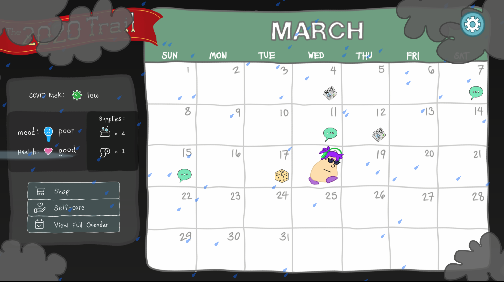
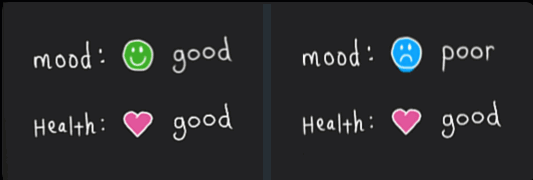
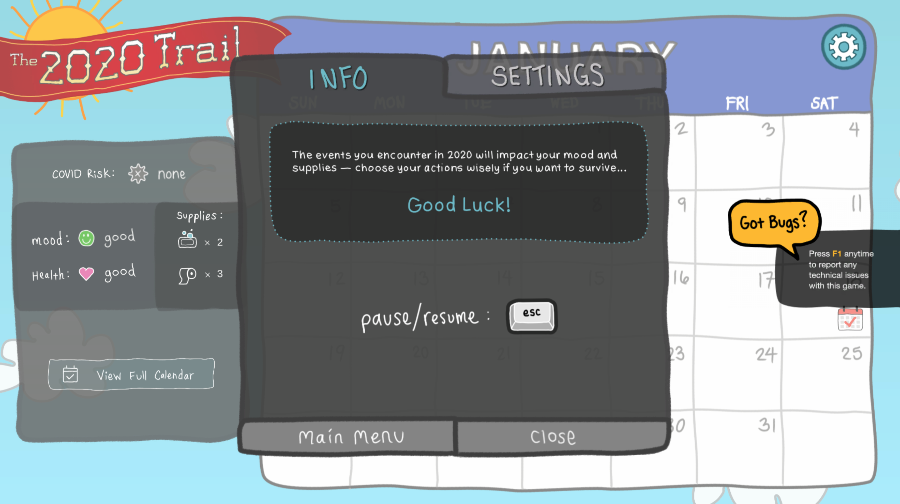
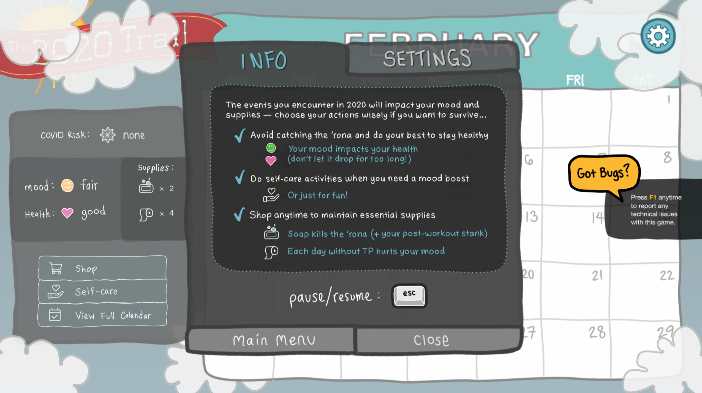
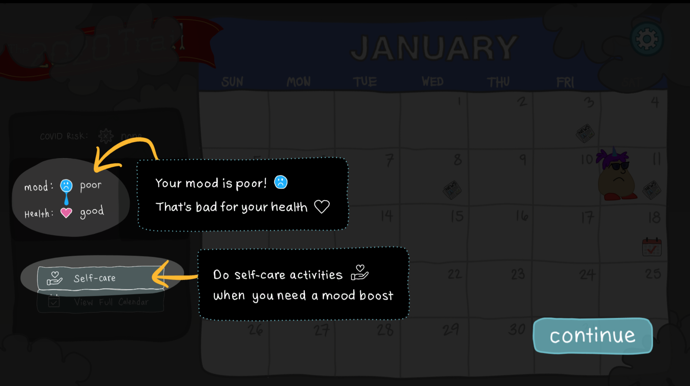

There's a lot of instructional design involved in game design, though it tends to be more subtle — and that's a good thing! Players don't need to feel like they're being trained on how to play a game. Ideally, they should be immersed in the playing experience, learning through the play itself.
Side note: This is true for the best ID as well, which is why I think more ID/LXDs should play games! But that's a conversation for another time...
However, for games made for a very wide audience, full immersion isn't always possible. Some players need more hand-holding than others, and that's okay too. That's where more obvious instructional design can come in.
Below is an example of some of the ID work I did for a video game called The 2020 Trail.
Note: I made The 2020 Trail video game as one half of a 2-person team (I did the art, writing, animation, and music/sound design). You can view the game trailer below for an overview, but the purpose of this page is to highlight some of the ID interventions I designed for this game. If you'd like to hear more about the full game design process, feel free to reach out!
The Challenge
As with any game, there are intentional challenges to overcome. These desirable difficulties are part of what make a game fun to play. However, understanding how to play the game shouldn't be one of them. Though this game uses fairly simple mechanics, there are multiple variable relationships that need to be understood in order to play effectively. The main challenge with The 2020 Trail was designing for the game's wide target audience. Some players were experienced gamers, while others were first time players with no points of reference on common game design conventions. To ensure a frustration-free playing experience for all, the game needed to cater to both ends of this spectrum.
Made with Unity, Affinity Designer, Spine, Ableton (trailer composed in Camtasia)
The Solution
Less is usually more. To keep the player immersed in gameplay, we started with no direct instruction. This allowed us to establish a baseline of what players really needed to learn the game. From there, we playtested and iterated as needed until we found the right balance.
Phase 1 — Relying on game design conventions
For experienced players, the combination of a simple dashboard, some iconography, and good sound design was enough to understand the game in the flow of play.
We expected this. Experienced players are used to seeing relative data presented to them as part of a game's user interface. As the game progressed, these players just "got it" because we were using best practices in game design (conventions they've seen before).
However, experienced gamers were only a subpopulation of our target audience. Through playtesting, we found that some players were struggling to connect the dots.

Phase 2 — Subtle design enhancements
For most players (those with moderate gaming experience), subtle design elements were enough to teach the game's mechanics.
For example, one of the main objectives of the game is to keep your character healthy as you progress through the year. To do this, you need to manage your mood because your mood impacts your health for better or worse. While your mood is good, your health is supported. While your mood is poor, your health is slowly damaged. To help convey this relationship between health and mood, we added demonstrative animations to the relevant portion of the player's dashboard.

Game information enhanced by iconography, animations, and sound now satisfied the bulk of our players. We could have stopped there. However, playtesting revealed that very novice players were still struggling to understand the game's mechanics. This was causing frustration and zapping fun out of the experience. Even though it was a small subset of the target audience, our goal was to make a game for everyone. Back to the drawing board!
Phase 3 — Direct instruction
For novice players, more direct instruction was almost enough.
To avoid frustrating our novice players with undesirable difficulties, we added more obvious instruction: an informational screen introduced at the start of the game that can be accessed at any time thereafter.
To start, the info screen explains only the high level objective of the game and includes a tab for game settings. As the game progresses and more game mechanics are introduced, more detail is added here. The info is also contextualized to where the player is in the game (main screen, mini games, etc.). This way, players only get the information that is relevant to the current state of the game. No need to frontload players with all game instructions at once!


What more could a player need? Well, turns out, not all players bother viewing the info screen we made available to them. Some were still not grasping key relationships or were missing changes to the gameplay as they arose. This led us to our final instructional intervention.
Phase 4 — A little hand-holding
For novice players, a little hand-holding was the final answer.
Again, your mood impacts your health in the game. This is conveyed in multiple ways in the game's design (UI, animations, sound effects, etc.). For most players, this doesn't need to be spelled out further. In fact, we wouldn't want to interrupt their flow of play to explain it! However, if a player doesn't pick up on these clues, they can become frustrated when their character dies of a poor mood without understanding why. So how do we satisfy both player types?
To address this, we intervene only once the player lets their mood fall to poor. We gently pause the gameplay to highlight the relationship between mood and health, and explain to the player how they can address their poor mood. The player can then continue playing. It's subtle enough not to annoy the experienced player, but direct enough so the novice player cannot miss it.

The Result
After many rounds of playtesting and several design iterations, the game achieved just the right amount of instruction to satisfy our wide variety of players. The result was a frustration-free playing experience for players across the spectrum. This was evidenced by playtesting as well as the reviews the game has received. As of June 2023, The 2020 Trail has maintained a 91% positive rating on Steam.